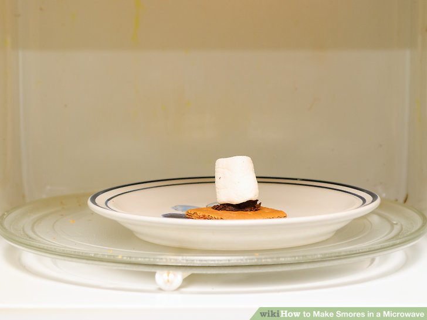

Indoor S'mores

Description
Are you're alone inside your urban apartment without any friends?
Looking to revisit the sweet taste of childhood, nature, and belonging?
Well, this is the recipe for you!
Ingredients
- a single marshmallow
- a single piece of chocolate
- a graham cracker (optional)
Steps
- Place the marshmallow on a microwaveable plate.
- Place the piece of chocolate atop the marshmallow
- Microwave this assemblage for about 15 seconds, or until the marshmallow has grown to be about the side of your hand.
- Use the graham cracker to dip into the chocolate, marshmallow mixture. Or, alternatively, use your finger.
- Enjoy the fleeting sense of a simpler time.